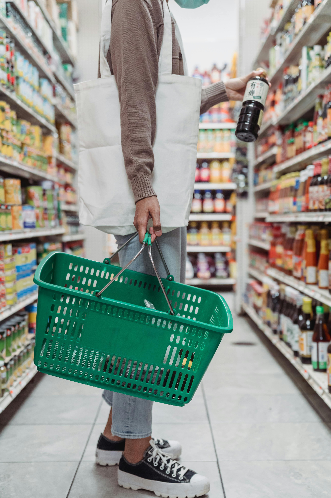
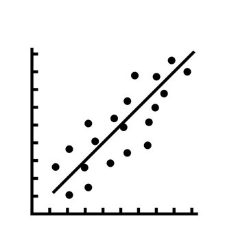

I'm a QA Tester with an interest in data. While studying Data Analytics through LSE, I've gained experience in data collection, cleaning, wrangling and visualisation.
Each project below represents different skills learnt on my journey to become a data analyst, and personal projects that have interested me.
Tools used:
A LSE project exploring a supermarket's sales data.
View Market Analysis Project A LSE project analysing NHS capacity and utilisation.
View NHS Analysis ProjectA LSE project using methods such as Linear and ML Regression.
View Advanced Analytics Project UK Polling & Seat Calculator - personal projects tracking polling and projecting seats.
Stock Market Earnings Analysis - analyzing earnings data to identify market trends and investment opportunities.
View Stock Market Earnings Project